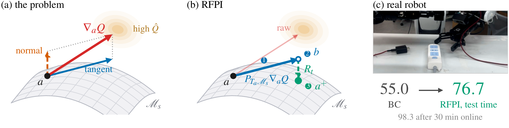
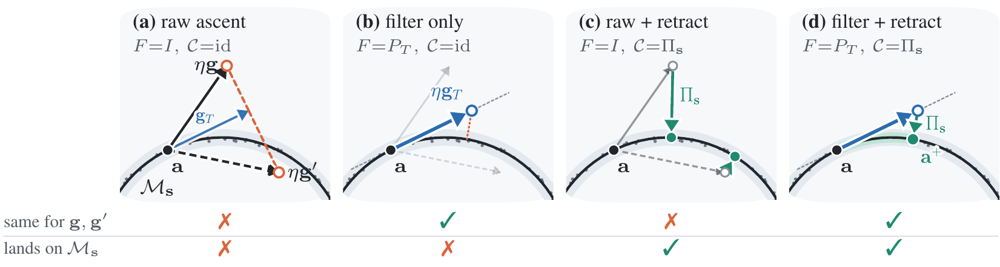
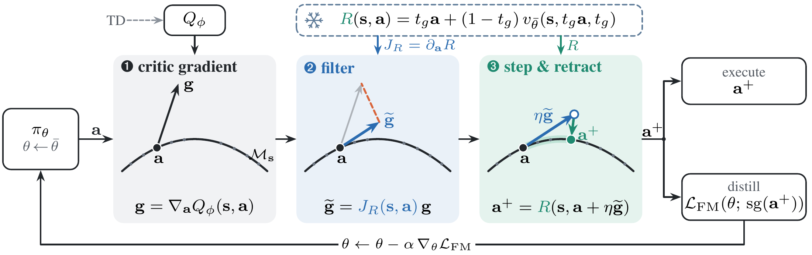
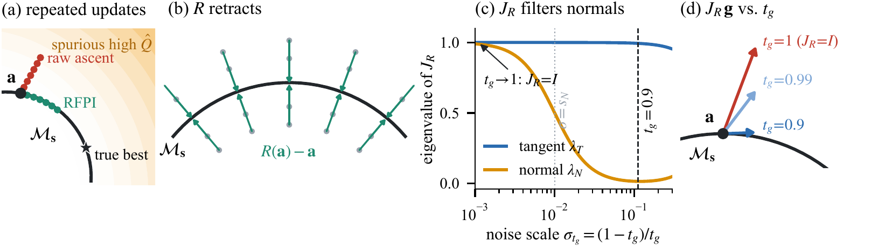

A learned critic can improve a pretrained flow-matching policy by steering sampled actions toward higher-value regions. However, accurate critic values on in-distribution actions do not imply reliable action gradients at those actions. Gradient components pointing away from the data-supported region are only weakly constrained by behavior data, so following them can exploit critic extrapolation errors. We introduce Retraction-Filtered Policy Improvement (RFPI), which constrains critic guidance using geometry already encoded by the pretrained flow. Theoretically, we show that the flow-induced denoising map approximately projects nearby actions onto this manifold, while its Jacobian approximately preserves tangent components and suppresses normal ones. RFPI uses the Jacobian to constrain the direction of critic-guided improvement and the denoising map to constrain the destination of the resulting action. The same update can guide actions at test time or provide targets for policy distillation and online reinforcement learning. In a controlled study with known geometry, RFPI reaches the highest true return among the compared updates while keeping nearly all improved actions within the data support. In offline-to-online training, it attains the highest mean final success among the compared critic-guidance methods on LIBERO benchmarks, and reaches 98.8% success on OGBench cube task. On real-world plug insertion task, test-time RFPI raises the success rate of a behavior-cloned \(\pi_{0.5}\) policy from 55.0% to 76.7% (73.3% with a second critic) without updating the policy, and subsequent online training reaches 98.3% within 30 minutes. These results show that a pretrained generative policy provides not only an expressive action distribution, but also local geometry for reliable policy improvement.

Model the demonstrated actions for a state \(s\) as a low-dimensional manifold \(\mathcal M_s\). Critic values observed on \(\mathcal M_s\) determine how \(Q\) changes along tangent directions, but not along normal directions. Two critics that agree on every data-supported action can have arbitrarily different normal derivatives.
Raw ascent \(a + \eta\,\nabla_a Q\) follows this unconstrained normal component off the support, into regions where a high predicted value is often just extrapolation error. Even a perfectly tangent step leaves a curved manifold at finite step size.
Two operations on an unknown manifold:
① a tangent projector \(P_T\) to filter the update direction, and
② a retraction to correct the update destination.
Our key observation: a pretrained flow policy already supplies both, through a single map that costs one velocity evaluation.

Let \(\bar\theta\) be the frozen behavior-cloned flow and \(t_g\in(0,1)\) a guidance level. Treating an action as a partially-noised flow state gives the denoising map
$$R(s,a) \;=\; t_g\,a \;+\; (1-t_g)\,v_{\bar\theta}\big(s,\;t_g a,\;t_g\big), \qquad J_R(s,a) \;=\; \partial_a R(s,a).$$Read the critic at an action sampled from the policy.
Keep the tangent part; suppress the normal part that behavior data cannot identify.
Take a finite step, then pull the endpoint back to the behavior support.

# v_ref: frozen BC velocity t_g: guidance level Q: critic def R(s, a): # denoising map of the frozen flow return t_g * a + (1 - t_g) * v_ref(s, t_g * a, t_g) def rfpi(s, a, eta): g = grad(Q(s, a), a) # ① critic gradient _, g_f = jvp(lambda x: R(s, x), (a,), (g,)) # ② filter: g_f = J_R g return stopgrad(R(s, a + eta * g_f)) # ③ step, then retract for it in range(num_iters): if online: collect(pi, env, E); td_update(Q, B_off, B_on, E) eta = calibrate(pi, Q) # median displacement = d_target s = sample_contexts() a_tgt = rfpi(s, pi.sample(s), eta) # fixed target bank for _ in range(n_fm): # distill with flow matching s_b, a_b = minibatch(s, a_tgt) t, z = rand(), randn_like(a_b) x_t = (1 - t) * z + t * a_b loss = mse(pi.v(s_b, x_t, t), a_b - z); loss.backward(); opt.step()
For the population-optimal flow, with noise scale \(\sigma=(1-t_g)/t_g\), the denoising map is a posterior mean and its Jacobian is a scaled posterior covariance (Tweedie's identity):
$$R^{\mathrm{opt}}(s,a)=\mathbb E\big[A \,\big|\, A+\sigma Z=a\big], \qquad J_R^{\mathrm{opt}}(s,a)=\sigma^{-2}\,\mathrm{Cov}\big[A \,\big|\, A+\sigma Z=a\big].$$Near the manifold the posterior concentrates at the nearest manifold point and spreads only along it, so
$$\underbrace{R^{\mathrm{opt}}=\Pi_s+O(\sigma^2)}_{\text{retraction}} \qquad\qquad \underbrace{J_R^{\mathrm{opt}}=P_T+O(\sigma^2)}_{\text{tangent filter}}$$As \(t_g\to 1\), \(R\to\mathrm{id}\) and \(J_R\to I\). This is the identity-Jacobian approximation used by prior guidance methods, and it filters nothing.

Below is the ideal version of RFPI, computed exactly in the browser. Behavior actions lie on a curve \(\mathcal M_s\) with thickness \(s_N\). The critic \(\hat Q\) is correct on the curve but has an extrapolated normal slope \(\beta\) off it (orange shading = \(\hat Q\), darker is higher). The star marks the true best action. \(R\) and \(J_R\) are the exact posterior mean and covariance of the data at noise level \(\sigma=(1-t_g)/t_g\). They are what a perfectly trained flow would give.
Drag the black point anywhere to inspect a single step. Arrows are drawn at a common scale, so the shrinkage of the normal part is visible.
| Update | true value ↑ | dist. to \(\mathcal M\) ↓ |
|---|
A bimanual humanoid must pick up a charger plug and insert it into a power strip. The task is contact-rich and needs millimetre-level alignment. The base policy is a behavior-cloned \(\pi_{0.5}\) (55.0% success). We evaluate RFPI in two regimes: test-time guidance of the frozen policy, and offline-to-online RL where refined actions are distilled back into the policy.
Third-person view, real-time playback. Green: RFPI rollouts (success). Red: unguided BC rollouts (failure), shown for comparison.
| Method | warm-up end | 0.5 h | 1.0 h | 1.5 h |
|---|---|---|---|---|
| RFPI | 55.0 | 98.3 | 100.0 | 96.7 |
| Q-VGM | 55.0 | 95.0 | 93.3 | 95.0 |
| QGF | 55.0 | 88.3 | 91.7 | 90.0 |
| FlowDPG | 55.0 | 88.3 | 86.7 | 85.0 |
Success rate (%) versus robot interaction time after critic warm-up. All methods start from the same BC policy and the same warmed-up critic, then differ only in how critic guidance produces policy-improvement targets. RFPI reaches 98.3% within 30 minutes and is the highest at every checkpoint.
Success rate (%). The same frozen BC policy is guided with two independently trained critic checkpoints. Baselines are our implementations adapted to this setting.
Critic value \(\min(Q_1,Q_2)\) for every executed action chunk, synchronized with the robot's head camera. In successful rollouts the value rises sharply as the plug approaches and seats in the socket. In failed rollouts it stays flat. Drag the slider to see how this structure emerges during online critic training. Click the chart to seek the video.
One action chunk = 30 frames at 30 FPS. Raw critic outputs, not normalized. Critic update counts range from 100 (after warm-up) to 340.
\(D=16\) manifold, 30 refinement–distillation rounds, median over 8 actor seeds.
| Method | True objective ↑ | Dist. to \(\mathcal M\), p95 ↓ |
|---|---|---|
| BC reference | 0.395 | 0.015 |
| Self-distillation | 0.266 | 0.081 |
| Raw ascent | −16.794 | 1.016 |
| Filter-only | −0.582 | 0.430 |
| Raw + \(R\) | 0.774 | 0.073 |
| RFPI | 0.827 | 0.028 |
RFPI reaches the highest true objective while keeping improved actions closest to the data support. This is the high-dimensional counterpart of the playground above.
Final success (%), all 10 tasks per suite, mean ± std over 3 seeds.
| Method | Goal | Object |
|---|---|---|
| Self-distillation | 59.6 ± 11.9 | 42.2 ± 5.3 |
| AWR | 71.9 ± 3.3 | 58.4 ± 0.7 |
| FlowDPG | 68.1 ± 3.2 | 49.3 ± 8.0 |
| Q-VGM | 73.6 ± 0.4 | 59.9 ± 2.0 |
| Raw ascent | 67.9 ± 5.8 | 56.6 ± 6.4 |
| Filter-only | 70.9 ± 5.6 | 57.8 ± 6.0 |
| Raw + \(R\) | 79.4 ± 1.4 | 62.1 ± 6.7 |
| RFPI | 79.8 ± 4.0 | 63.1 ± 5.3 |
The geometric interpretation relies on local manifold assumptions and on the accuracy of the learned flow and its Jacobian. In a dimension sweep with a fixed training budget, normal attenuation weakened substantially for a \(D=512\) model. On LIBERO, RFPI and Raw + \(R\) perform similarly, so the additional control benefit of filtering beyond endpoint correction is not yet established there. Repeated purely-offline refinement–distillation rounds degraded LIBERO success, which motivates separating errors in the refined targets from errors in fitting them.
@inproceedings{anonymous2027rfpi,
title = {Retraction-Filtered Policy Improvement:
Using a Flow Policy's Own Geometry to Guide It},
author = {Anonymous},
booktitle = {Submitted to International Conference on Learning Representations (ICLR)},
year = {2027},
note = {Under review}
}